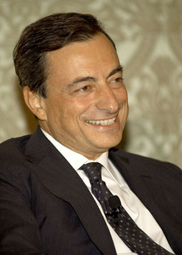

17/10/13 El Presidente del Banco Central Europeo, Mario Draghi, apadrinará a la 26ª. promoción del Programa Máster en Unión Europea del Real Instituto de Estudios Europeos.

El día 25 comenzará sus sesiones en Zaragoza la 26ª. edición (2013-14) del Programa Máster profesional en Unión Europea que organiza el Real Instituto de Estudios Europeos y que incluye sesiones intensivas en Bruselas, Estrasburgo, Luxemburgo y Fráncfort. El Máster lo presentó en Zaragoza en 1988 el Ministro de Asuntos Exteriores Francisco Fernández Ordóñez y ha formado ya a 588 participantes que trabajan en 41 países y en Organizaciones internacionales, especialmente en la Unión Europea. El pasado año la 25ª. promoción fue apadrinada por Manuel Pizarro, impartiendo las lecciones inaugural y de clausura, respectivamente, el Presidente del ICO, Román Escolano, y el Ministro de Asuntos Exteriores, José Manuel García-Margallo.
El Presidente del Banco Central Europeo, Dr. Mario Draghi, una personalidad de relieve mundial, que el Real Instituto de Estudios Europeos considera absolutamente fundamental en el salvamento del euro y en el reforzamiento del BCE, ha aceptado apadrinar a la 26ª. promoción. El Instituto desea, en palabras de su Presidente, Maximiliano Bernad, honrar así a un alto funcionario internacional “que ha comprendido perfectamente la enorme envergadura de los retos, que los ha asumido con inteligencia y decisión frente a presiones a veces innobles y hasta fuera de las reglas y que ha logrado el éxito, lo que los europeos tendremos que agradecerle siempre”.
Mario Draghi se une a una relación de eminentes personalidades que han apoyado directamente las tareas de alta formación del Real Instituto de Estudios Europeos, y concretamente el Máster, entre quienes cabe destacar a S. M. el Rey, S. A. R. el Príncipe Felipe, Jacques Delors, Giulio Andreotti, Abel Matutes o Javier Elorza.
El día 4 de noviembre se abrirá el plazo de inscripciones para la edición 2014-2015 de este Programa Máster profesional en Unión Europea.